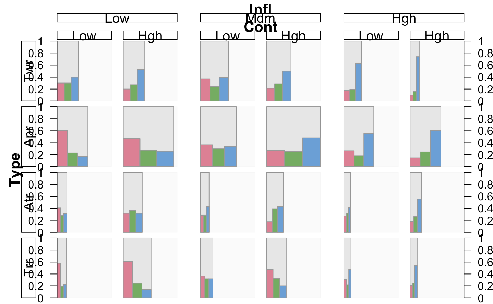
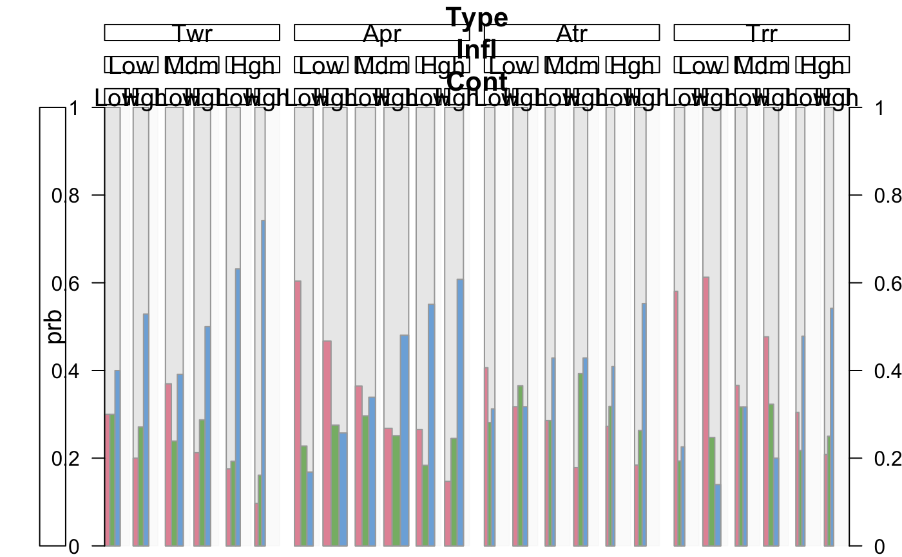
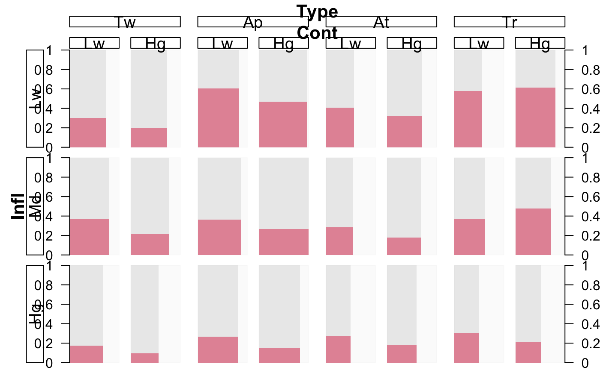

rmb.RdThe rmb function basically produces a Multiple Barchart for the relative frequencies of some target categories within each combination of the explanatory variables. The weights of those combinations (that is the absolute frequencies) are represented in the total with of the corresponding barchart.
The result is a graphic which allows to read the conditional target distributions exactly from the graphic without losing the information about the importance (in the sense of the number of observations) of the different combinations.
Additionally the rmb function allows to draw spineplots instead of the barcharts within each explanatory combination. On that score it can be seen as a generalization of Spineplots.
# S3 method for formula rmb(formula, data, col.vars = NULL, spine = FALSE, circular = FALSE, eqwidth = FALSE, cat.ord = NULL, cut = NULL, innerval = 1, freq.trans = NULL, num.mode = FALSE, max.scale = 1, use.na = FALSE, expected = NULL, residuals = NULL, model.opt = list(), gap.prop = 0.2, gap.mult = 1.5, col = "hcl",col.opt = list(), label = TRUE, label.opt = list(), vp = NULL, …) # S3 method for ftable rmb(x, col.vars = NULL, spine = FALSE, circular = FALSE, eqwidth = FALSE, cat.ord = NULL, freq.trans = NULL, max.scale = 1, use.na = FALSE, expected = NULL, residuals = NULL, model.opt = list(), gap.prop = 0.2, gap.mult = 1.5, col = "hcl",col.opt = list(), label = TRUE, label.opt = list(), vp = NULL, …)
| x | Either a table or a model of class |
||||||||||||||||||||||||||||||||||||||||||||||||||||||||||||||||||||||||||||||||||||||||
|---|---|---|---|---|---|---|---|---|---|---|---|---|---|---|---|---|---|---|---|---|---|---|---|---|---|---|---|---|---|---|---|---|---|---|---|---|---|---|---|---|---|---|---|---|---|---|---|---|---|---|---|---|---|---|---|---|---|---|---|---|---|---|---|---|---|---|---|---|---|---|---|---|---|---|---|---|---|---|---|---|---|---|---|---|---|---|---|---|---|
| formula | The |
||||||||||||||||||||||||||||||||||||||||||||||||||||||||||||||||||||||||||||||||||||||||
| data | The dataset as a data.frame or |
||||||||||||||||||||||||||||||||||||||||||||||||||||||||||||||||||||||||||||||||||||||||
| col.vars | Logical vector with split directions where |
||||||||||||||||||||||||||||||||||||||||||||||||||||||||||||||||||||||||||||||||||||||||
| spine | If |
||||||||||||||||||||||||||||||||||||||||||||||||||||||||||||||||||||||||||||||||||||||||
| circular | If |
||||||||||||||||||||||||||||||||||||||||||||||||||||||||||||||||||||||||||||||||||||||||
| eqwidth | If |
||||||||||||||||||||||||||||||||||||||||||||||||||||||||||||||||||||||||||||||||||||||||
| cat.ord | A vector specifying the categories of the target variable which will be visualized in the specified order. The default is to use all categories. |
||||||||||||||||||||||||||||||||||||||||||||||||||||||||||||||||||||||||||||||||||||||||
| cut | Numeric variables will be cut into this number of intervals. May also be a vector with specifications for each variable. |
||||||||||||||||||||||||||||||||||||||||||||||||||||||||||||||||||||||||||||||||||||||||
| innerval | The function innerval is used to reduce numeric variables to an interval which is symmetric around the median contains the specified proportion of observations (or as close to this as possible). |
||||||||||||||||||||||||||||||||||||||||||||||||||||||||||||||||||||||||||||||||||||||||
| freq.trans | This parameter allows to transform the absolute frequencies used for the underlying multiple barchart. Possible values are |
||||||||||||||||||||||||||||||||||||||||||||||||||||||||||||||||||||||||||||||||||||||||
| num.mode | In the numeric mode the gaps are removed and axes typical for numeric variables are drawn. Ignored for factor variables. |
||||||||||||||||||||||||||||||||||||||||||||||||||||||||||||||||||||||||||||||||||||||||
| max.scale | The maximum value of the probability (y-axis) scale for each combination. Unsurprisingly the default is 1. The axis will be drawn if |
||||||||||||||||||||||||||||||||||||||||||||||||||||||||||||||||||||||||||||||||||||||||
| use.na | If |
||||||||||||||||||||||||||||||||||||||||||||||||||||||||||||||||||||||||||||||||||||||||
| expected | There are three possibilities how to specify this parameter: 1. A list of integer vectors denoting the interaction terms in the poisson or proportional odds model, e.g. If undefinded or set to |
||||||||||||||||||||||||||||||||||||||||||||||||||||||||||||||||||||||||||||||||||||||||
| residuals | If |
||||||||||||||||||||||||||||||||||||||||||||||||||||||||||||||||||||||||||||||||||||||||
| model.opt | A list with optional parameters for model specifications. Possible parameters are:
|
||||||||||||||||||||||||||||||||||||||||||||||||||||||||||||||||||||||||||||||||||||||||
| gap.prop | The maximum proportion of the total plot width which is used for the gaps. |
||||||||||||||||||||||||||||||||||||||||||||||||||||||||||||||||||||||||||||||||||||||||
| gap.mult | The incremental multiplier for the gaps of different dimensions. The gaps corresponding to any one variable are |
||||||||||||||||||||||||||||||||||||||||||||||||||||||||||||||||||||||||||||||||||||||||
| col | Either a vector defining the colors of the bars or a name specifying a palette: |
||||||||||||||||||||||||||||||||||||||||||||||||||||||||||||||||||||||||||||||||||||||||
| col.opt | Further options for the color palettes. See e.g. rainbow_hcl or rainbow. Other parameters are:
|
||||||||||||||||||||||||||||||||||||||||||||||||||||||||||||||||||||||||||||||||||||||||
| label | Either a logical specifying whether or not to draw labels or a numeric vector defining which variables shall be labelled. |
||||||||||||||||||||||||||||||||||||||||||||||||||||||||||||||||||||||||||||||||||||||||
| label.opt | A list with optional parameters for label specifications. Possible parameters are:
|
||||||||||||||||||||||||||||||||||||||||||||||||||||||||||||||||||||||||||||||||||||||||
| vp | An optional viewport to plot in. |
||||||||||||||||||||||||||||||||||||||||||||||||||||||||||||||||||||||||||||||||||||||||
| … | further arguments. Usually not necessary. |
A similar way to regard the graphic is the following: A Multiple Barchart of the explanatory variables is drawn with bars in horizontal direction. Then within each of the resulting bars a barchart of the conditional distribution of the target variable is drawn with bars in vertical direction.
Alexander Pilhoefer, Antony Unwin (2013). New Approaches in Visualization of Categorical Data: R Package extracat. Journal of Statistical Software, 53(7), 1-25. URL http://www.jstatsoft.org/v53/i07/
require(MASS) # simple example rmb(formula = ~Type+Infl+Cont+Sat, data = housing, gap.mult = 2, col.vars = c(FALSE,TRUE,TRUE,FALSE), label.opt = list(abbrev = 3))# with sqrt-transformation and horizontal splits only rmb(formula = ~Type+Infl+Cont+Sat, data = housing, gap.mult = 2, col.vars = c(TRUE,TRUE,TRUE,TRUE), freq.trans = "sqrt", label.opt = list(abbrev = 3) )# a generalized spineplot with the first category highlighted rmb(formula = ~Type+Infl+Cont+Sat, data = housing, spine = TRUE, cat.ord = 1, mult = 2, col.vars = c(1,3,4), freq.trans = list("sqrt",3), label.opt = list(abbrev = 2))# NOT RUN { # a generalized spineplot with all categories highlighted # in a changed order rmb(formula = ~Type+Infl+Cont+Sat, data = housing, spine = TRUE, cat.ord = c(3,1,2), gap.mult = 2, col.vars = c(TRUE,FALSE,TRUE,TRUE), freq.trans = "sqrt", label.opt = list(abbrev = 3)) # the barchart version only for categories 1 and 3 rmb(formula = ~Type+Infl+Cont+Sat, data = housing, cat.ord = c(1,3), gap.mult = 2, col.vars = c(TRUE,FALSE,TRUE,TRUE), freq.trans = "sqrt", label.opt = list(abbrev = c(4,1,1,1))) # with equal widths rmb(formula = ~Type+Infl+Cont+Sat, data = housing, eqwidth = TRUE, gap.mult = 2, col.vars = c(TRUE,FALSE,TRUE,TRUE), label.opt = list(abbrev = 2, lab.tv = TRUE)) # ----- models and residuals ----- # # using the logistic model: Sat by Type only # residual shadings and expected values rmb(formula = ~Type+Infl+Cont+Sat, data = housing, gap.mult = 2, col.vars = c(TRUE,FALSE,TRUE,TRUE), label.opt = list(abbrev = 3), expected = list(c(1,2,3),c(1,4)), model.opt = list(use.expected.values = TRUE, resid.display = "color") ) # residual values without shadings rmb(formula = ~Type+Infl+Cont+Sat, data = housing, gap.mult = 2, col.vars = c(TRUE,FALSE,TRUE,TRUE), label.opt = list(abbrev = 3), expected = list(c(1,2,3),c(1,4)), model.opt = list( resid.display = "values") ) # residual shadings and expected values rmb(formula = ~Type+Infl+Cont+Sat, data = housing, gap.mult = 2, col.vars = c(TRUE,FALSE,TRUE,TRUE), label.opt = list(abbrev = 3), expected = list(c(1,2,3),c(1,4)), model.opt = list(use.expected.values = TRUE, resid.display = "color") ) # barcharts with residual shadings and values rmb(formula = ~Type+Infl+Cont+Sat, data = housing, gap.mult = 2, col.vars = c(TRUE,FALSE,TRUE,TRUE), label.opt = list(abbrev = 3), expected = list(c(1,2,3),c(1,4)) ) # spineplots with residual shadings and values rmb(formula = ~Type+Infl+Cont+Sat, data = housing, spine = TRUE, gap.mult = 2, col.vars = c(TRUE,FALSE,TRUE,TRUE), label.opt = list(abbrev = 3), expected = list(c(1,2,3),c(1,4)) ) # piecharts with residual shadings and values rmb(formula = ~Type+Infl+Cont+Sat, data = housing, circular = TRUE, gap.mult = 2, col.vars = c(TRUE,FALSE,TRUE,TRUE), label.opt = list(abbrev = 3), expected = list(c(1,2,3),c(1,4)) ) # ----- using an ftable to create the plot ----- # tt = xtabs(Freq~Type+Cont+Infl+Sat, data = housing) ft = ftable(tt, col.vars= c(1,4)) rmb(tt) rmb(ft) # ----- using a glm model ----- # mod1 <- glm(Freq ~ Type*Infl*Cont + Type*Sat, data = housing, family = poisson) rmb(mod1, circular = TRUE, gap.mult = 2, col.vars = c(TRUE,FALSE,TRUE,TRUE), label.opt = list(abbrev = 3), model.opt = list(use.expected.values = TRUE) ) # ----- the numeric mode and cuts ----- # data(olives) # only three cuts to show how it works rmb(~palmitoleic+stearic+Region, data = olives, cut = c(3,3,0)) require(ggplot2) data(diamonds) diamonds$lprice <- log(diamonds$price) # a minority of extreme observations mess the display up: rmb(~depth+table+lprice, data = diamonds, eqwidth = TRUE, spine = TRUE, cut = c(36,36,5), col = "seq", num.mode = TRUE) # we can zoom in via innerval: rmb(~depth+table+lprice, data = diamonds, circular = TRUE, cut = c(36,36,5), col = "div", innerval = 0.95, num.mode = TRUE, freq.trans ="log") # price, carat and color diamonds$lprice <- log(diamonds$price) diamonds$lcarat <- log(diamonds$carat) rmb(~lcarat+lprice+color, data = diamonds, cut = c(24,24,0), col = "rgb", num.mode = TRUE, freq.trans="sqrt", eqwidth=TRUE, max.scale=0.5) # }